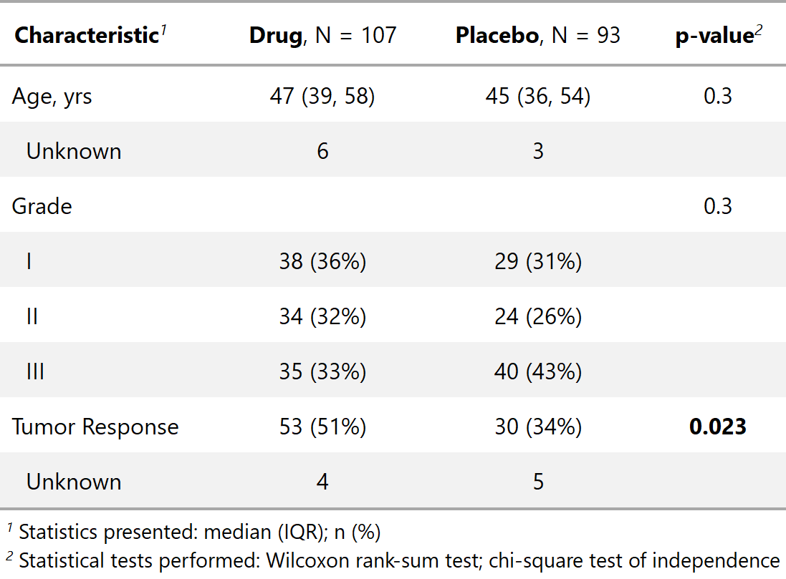

| tab_style_bold_p.tbl_summary {gtsummary} | R Documentation |
Bold p-values in tables created by tbl_summary
## S3 method for class 'tbl_summary' tab_style_bold_p(x, t = 0.05, q = FALSE, ...)
x |
an object created using |
t |
threshold below which p-values will be bold. Default is 0.05. |
q |
logical argument. When TRUE will bold the q-value column rather than the p-values |
... |
not used |

Daniel D. Sjoberg
tbl_sum_bold_p_ex <- trial %>% dplyr::select(age, grade, response, trt) %>% tbl_summary(by = "trt") %>% add_comparison() %>% tab_style_bold_p()